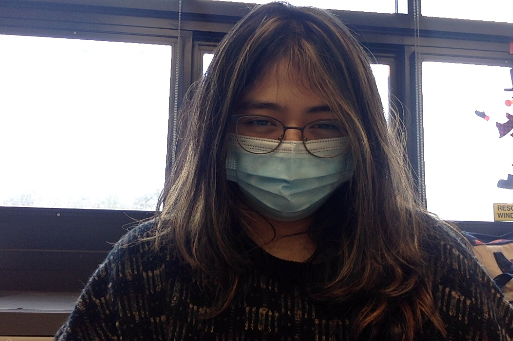
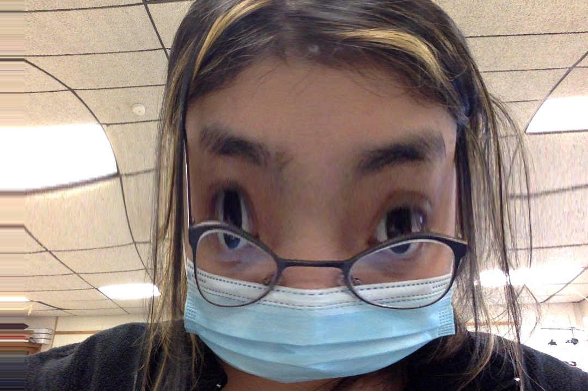

kristy martinez by kristy martinez
♡ one of the main reasons i got into web
development was because i was extremely dedicated to a tumblr blog a few
years ago. i used this blog to vent about everything i was feeling and used
it to express myself without keeping anything bottled in. although i am not
the same person i was a few years ago, i am still struggling with my mental
health and expressing what i'm feeling. this page will be the beginning of
me working on myself. i will use this page to write down whatever i feel and
use it to do whatever i want ♡
♡ the feelings ♡
br>
i feel isolated even though i'm not im literally surrounded by friends who love ME!!! WHY!!!!!
i'm finally free enough to work on the stuff i love
like this website and finally have the time to play with friends. i really
wanna make this website colorful now but that means i have to work on my art
;-;

i look very bad in this picture but i already read my
english book so i'm just chilling in here, i'm in a writer's block for my
gates essays
i'm still figuring out how to upload gaming clips on here because they usually become very weird and laggy
hello everyone reading this i hope u have a good day here is a real picture of me
